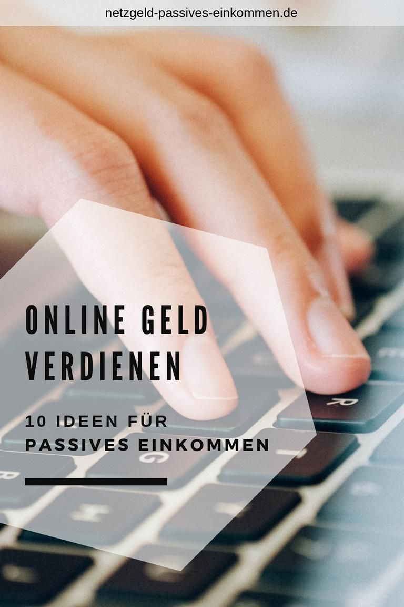

Welcome to Finanziell unabhängig
Passives Einkommen oder «Wie werde ich finanziell unabhängig?» – Crowdhouse
2020.11.28 10:34Einloggen Registrieren Angebot
Kaufen
Erwerben Sie exklusive Mehrfamilienhäuser im Alleineigentum
Zu den ImmobilienInvestieren
Werden Sie Miteigentümer von soliden Schweizer Mehrfamilienhäusern
Zu den ImmobilienVerkaufen
Finden Sie einfach den perfekten Käufer für Ihre Immobilie
Immobilien anbietenVerwalten
Lassen Sie Ihr Mehrfamilienhaus optimal verwalten
Lernen Sie uns kennen Über unsUnternehmen
Was Crowdhouse bewegt: Unser Team, unsere Vision, unsere Partner
Karriere
Werde Teil unseres Teams - Arbeite mit uns
Kontakt
Bei Fragen aller Art: Wir sind für Sie da
HilfeInvestieren
Fragen zum Miteigentumsmodell
Kaufen
Fragen zum Alleinkauf von Immobilien
Verkaufen
Fragen zum Verkauf von Immobilien über Crowdhouse
Allgemeines
Allgemeine Fragen zu Crowdhouse & Investments
Events Blog EinloggenPassives Einkommen oder «Wie werde ich finanziell unabhängig?» Blog
Investieren
Passives Einkommen oder «Wie werde ich finanziell unabhängig?»
5. November 2019
Mehr Freizeit, mehr Geld, finanzielle Unabhängigkeit: Die Möglichkeiten, die passives Einkommen bietet, sind vielfältig. Dabei ist es relativ einfach, ein solches aufzubauen – mittels Investments. In diesem Artikel stellen wir Ihnen einige Möglichkeiten dazu vor.Inhalt:
Definition passives Einkommen Investments für passives Einkommen Outsourcing Aktien Private Kreditvergabe Immobilien FazitBeginnen wir mit einer Definition: Was ist passives Einkommen?
Ganz grundsätzlich ist das ein Verdienst, der nicht direkt einem konkreten Arbeitsaufwand gegenübersteht. Das heisst: Er wird auch dann generiert, wenn man nicht selber dafür arbeitet – anders als beispielsweise beim klassischen Angestelltenverhältnis, bei dem der Arbeitnehmer eine bestimmte Arbeit verrichtet und dafür vom Arbeitgeber mit einem Lohn vergütet wird. Vereinfacht gesagt: Beim passiven Einkommen lassen Sie Ihr Geld für sich arbeiten, anstatt umgekehrt .
Wichtig dabei ist, dass es ein regelmässiges Einkommen ist, vergleichbar mit einem Lohn. Ein einmaliges Erbe oder ein Lottogewinn gehören daher beispielsweise nicht zum passiven Einkommen, auch wenn sie grundsätzlich ohne eigene Arbeitsleistung generiert werden. Mit solch grösseren Summen hat man jedoch ausgezeichnete Möglichkeiten, ein passives Einkommen aufzubauen – mehr dazu weiter unten.
Wie das Verb aufbauen bereits andeutet, ist es etwas irreführend, dieses Einkommen als passiv zu bezeichnen. Es ist durchaus mit einem gewissen Aufwand verbunden, sein Geld so anzulegen, dass es ein verlässliches Einkommen generiert – Von nichts kommt bekanntlich nichts.
Jetzt fragen Sie sich vielleicht, Warum soll ich mich überhaupt damit auseinandersetzen?
Vielen Investoren geht es beim passiven Einkommen darum, den Lohn aus ihrer Arbeitstätigkeit schrittweise zu ersetzen. Dadurch können sie ihren Lebensunterhalt finanzieren, ohne 40 oder mehr Stunden die Woche dafür arbeiten zu müssen. Diese Situation nennt man finanzielle Unabhängigkeit .
Dies gibt einem eine grosse Freiheit: Sie möchten sich eine Auszeit nehmen und fremde Länder entdecken, ohne dabei Ihr Erspartes aufzubrauchen? Sie wollen sich nicht darauf verlassen müssen, dass unser öffentliches Rentensystem auch in 20 oder 30 Jahren noch funktioniert? Sie möchten das Leben mehr geniessen, ohne einen Grossteil davon bei der Arbeit zu verbringen?
Wenn das für Sie interessant klingt, dann lesen Sie weiter.
Investments, die passives Einkommen generieren
Für den Zweck dieses Artikels gehen wir davon aus, dass Sie bereits eine gewisse Summe auf der sprichwörtlichen «hohen Kante» haben. Es ist hinlänglich bekannt, dass Banken seit Jahren keine nennenswerten Zinsen auf Sparguthaben mehr bezahlen. Im Gegenteil: Immer mehr Finanzinstitute verlangen von ihren Kunden Strafzinsen , wenn deren Einlagen eine gewisse Summe überschreiten.
Sie sind also praktisch zum Investieren gezwungen, wenn Sie Ihr Geld für sich arbeiten lassen wollen. Um für die Generierung eines passiven Einkommens geeignet zu sein, sollte ein Investment zwei wichtige Voraussetzungen erfüllen:
Das Investment weist eine gewisse Stabilität und Sicherheit auf. Es bietet eine regelmässige Ausschüttung der Rendite , idealerweise monatlich.Im Folgenden finden Sie eine Auswahl an Investments, die diese Kriterien erfüllen:
«Outsourcing»
Grundsätzlich kann praktisch jede Investmentstrategie und jedes Anlageprodukt ein passives Einkommen generieren, nämlich wenn Sie externe Vermögensverwalter beiziehen. Diese legen Ihr Kapital selbstständig nach einer zu Beginn definierten Strategie in Ihrem Namen an. Sie müssen lediglich Ihre Anlagesumme überweisen.
Im Zuge der Digitalisierung dringen auch sogenannte Robo Advisors zunehmend in das Geschäft mit der Vermögensverwaltung ein. Vereinfacht gesagt sind dies Computerprogramme, die nach bestimmten Vorgaben des Investors dessen Kapital eigenständig anlegen.
Für viele, gerade unerfahrene, Investoren (oder solche, die ein sehr hohes Anlagevermögen haben) können externe Vermögensverwalter – ob digital oder aus Fleisch und Blut – eine grosse Entlastung sein, da sie über ein grosses Fachwissen verfügen und die gesamte Arbeit erledigen.
Man sollte sich jedoch einiger Punkte bewusst sein:
Die Kosten bewegen sich häufig zwischen rund 0.5 und 1.2 % des Anlagebetrages für Robo Advisors – Bei «analogen» Lösungen beginnen die Kosten bei ungefähr einem Prozent. Es existieren gewisse Interessenskonflikte , gerade bei Banken: Da sie in den meisten Fällen eigene Investmentprodukte anbieten, haben sie einen Anreiz, das Geld des Investors bevorzugt in diese Produkte zu investieren, weil sie damit Einnahmen für sich generieren. Dies ist jedoch nicht notwendigerweise im besten Interesse des Investors. Die Mindestinvestitionsbeträge für Robo Advisors liegen meist bei CHF 2000 bis CHF 5000. Bei solch niedrigen Beträgen ist man jedoch üblicherweise stark an die Anlagestrategie gebunden, die der Anbieter des Robo Advisors vorgibt – Dies kann im Hinblick auf den oben genannten Interessenskonflikt problematisch sein. Individuelle Lösungen gibt es erst ab deutlich höheren Summen.Auch Fonds zählen wir zur Kategorie «Outsourcing», da der Investor keine konkreten Anlageentscheidungen treffen muss, abgesehen vom Kauf der Fondsanteile. Bei Fonds muss beachtet werden, dass es solche gibt, die Erträge ausschütten (sog. ausschüttende Fonds) und solche, die Erträge direkt reinvestieren (sog. thesaurierende Fonds). Für den Aufbau eines passiven Einkommens sind selbstverständlich nur erstere interessant.
Die meisten ausschüttenden Fonds überweisen einmal pro Jahr ihre Rendite an die Investoren – nicht ideal für ein regelmässiges Einkommen. Ein solches lässt sich aber dennoch mit Fonds bewerkstelligen. Die Lösung ist dieselbe wie bei Aktien (siehe nächsten Abschnitt).
Aktien
Wertpapiere wie Aktien gehören zu den gängigsten Investments. Grundsätzlich lassen sich mit ihnen auf zwei Arten Renditen , also Einkommen, generieren: Wertsteigerungen und Dividenden.
Das Einkommen aus Wertsteigerungen lassen wir in dieser Betrachtung aussen vor, weil der Investor dieses einerseits aktiv herbeiführen muss – durch Verkauf der Titel – und es andererseits nicht automatisch wiederkehrend ist: Um erneut von möglichen Wertsteigerungen zu profitieren, muss der Investor wieder Aktien kaufen und zum richtigen Zeitpunkt verkaufen.
Dividenden eignen sich hingegen hervorragend, um ein passives Einkommen zu schaffen. Es gilt zu beachten, dass die meisten europäischen Unternehmen ihre Dividenden lediglich einmal pro Jahr ausschütten, üblicherweise direkt nach der Generalversammlung. Amerikanische Unternehmen nehmen die Ausschüttungen hingegen häufig quartalsweise vor, einige auch monatlich.
Da die Zeitpunkte von Dividendenzahlungen verschiedener Firmen über das ganze Jahr verteilt sind, kann sich der Investor sein Portfolio aus Aktien mehrerer Firmen so zusammenstellen, dass ein monatliches (oder sogar wöchentliches) Einkommen resultiert.
Obligationen sind aufgrund des extrem niedrigen Zinsniveaus aktuell nur sehr begrenzt für ein passives Einkommen geeignet. Bundesobligationen mit 10 Jahren Laufzeit beispielsweise «rentieren» per Ende Oktober 2019 mit rund -0.5 % und auch in der Privatwirtschaft sind die Zinssätze vernachlässigbar.
Private Kreditvergabe
Besser stehen Privatkredite da. Dies ist ein Segment, das dank der Digitalisierung aktuell stark wächst, gerade im Bereich Crowdlending . Dieses legte in der Schweiz von 2017 auf 2018 um mehr als 40 % zu.
Das Prinzip dabei ist einfach: Jemand möchte sich Geld leihen, sei es zur Erweiterung seines Geschäftes, der Anschaffung eines neues Autos oder der Refinanzierung eines bestehenden Kredites. Anstatt zu einer Bank geht er zu einem Crowdlending-Anbieter , da dieser günstige Zinsen und eine einfache Abwicklung bietet. Dieser Anbieter schreibt den Kreditantrag auf seiner Plattform aus – nach entsprechender Bonitätsprüfung des Schuldners. Über die Plattform können private Investoren als Gläubiger in diesen Kredit investieren und erhalten monatlich die Zinsen überwiesen sowie zusätzlich eine Tranche des investierten Betrages – zur Amortisation.
Mit diesem Prinzip ist es noch einfacher als mit Aktien , sich ein passives Einkommen aufzubauen, da die Zinszahlungen üblicherweise monatlich erfolgen. Bereits ab unter CHF 1000 kann investiert werden. Kursschwankungen entfallen, da mit derartigen Investments kaum gehandelt wird. Dies ist jedoch auch wieder ein Nachteil: Ein vorzeitiges Beenden des Investments ist sehr schwierig, weil es keinen Sekundärmarkt gibt. Üblicherweise muss der Investor die Laufzeit des Kredits abwarten, bis er wieder über den gesamten Anlagebetrag verfügen kann.
Immobilien
«Betongold» ist ein weiteres beliebtes Investment, das ein regelmässiges Einkommen mittels monatlicher Mietzinseinnahmen generiert. Immobilien hatten im Jahr 2018 gar die höchste Rendite aller Anlageklassen in der Schweiz. Hypotheken sind aktuell historisch günstig, was eine Immobilieninvestition zusätzlich attraktiv macht.
Der klassische Immobilienkauf birgt jedoch einige Schwierigkeiten, welche Aktien und Crowdlending nicht kennen:
Hohe Kosten: Eigentumswohnungen kosten mehrere hunderttausend, Mehrfamilienhäuser meist einige Millionen Franken – für viele Investoren weder erschwinglich noch sinnvoll im Sinne der Diversifikation des Portfolios. Aufwendige Abwicklung : Der Immobilienmarkt ist nach wie vor sehr analog – Unterlagen müssen manuell eingeholt werden, der Verkauf muss durch einen Notar beglaubigt werden, das Grundbuchamt ist involviert etc. Schwieriger Marktzugang : Ohne entsprechendes Netzwerk ist es aufwendig bis unmöglich, an gute Deals zu kommen.Arbeitsintensive Bewirtschaftung : Ein Punkt, der oftmals unterschätzt wird: Um langfristig rentabel zu sein, müssen Immobilien sorgfältig bewirtschaftet werden. Mieterwechsel, Unterhalt, Renovationen – Je nach Grösse der Liegenschaft resultiert ein beträchtlicher Arbeitsaufwand.
Einfacher dank Crowdhouse
Crowdhouse kennt die Probleme des Immobilienmarktes – Und löst sie mit innovativen Methoden:
Niedrige Investmentschwelle : Bereits ab CHF 100’000 können Sie Ihr Kapital in Liegenschaften mit teilweise über 30 Wohnungen anlegen und das Klumpenrisiko somit minimieren. Keine Aufwände : Crowdhouse stellt die gesamte Dokumentation online zur Verfügung, sichert eine optimale Hypothekarlösung (beim Alleinkauf auf Wunsch) und führt die Kaufabwicklung durch – Investoren müssen lediglich das Vertragswerk unterschreiben und ihr Kapital überweisen. Grosses Netzwerk : Dank des ständig wachsenden Netzwerks hat Crowdhouse Zugang zu einer riesigen Anzahl an Liegenschaften, von denen nur die besten den Investoren angeboten werden, sei es im Miteigentum oder zum Alleinkauf . Rundum Sorglos-Paket : Nach der Eigentumsübertragung übernimmt Crowdhouse die Bewirtschaftung der Liegenschaft (beim Alleinkauf auf Wunsch). So müssen Sie sich um nichts kümmern und erhalten monatlich die Rendite ausbezahlt.Fazit
Es war noch nie so einfach wie heute, sein Kapital so anzulegen, dass es ein (weitgehend) passives Einkommen generiert. Die Digitalisierung hält in vielen Sektoren Einzug, die bis vor Kurzem noch komplett analog waren. Gerade neue Anbieter und junge Firmen nutzen die Gunst der Stunde, um den Etablierten Marktanteile streitig zu machen. So kommt Bewegung in den Markt, neue und kundenfreundlichere Produkte werden zu transparenten Kosten angeboten und der Zugang zu diesen Produkten wird für eine viel breitere Kundenschicht geöffnet.
Um komplett vom passiven Einkommen leben zu können, sind in den meisten Fällen mehrere hunderttausend Franken Anlagekapital notwendig – eine Anlage von CHF 500’000, mit 6 % verzinst, ergibt ein Jahreseinkommen von CHF 30’000.
Diese Zahlen müssen jedoch nicht entmutigend wirken: Da die Mindestanlagebeträge vielfach bereits unter CHF 10’000 liegen, ist es auch problemlos möglich, sich schrittweise an ein grosses Kapital heranzuarbeiten. Dank monatlicher Ausschüttungen der hier präsentierten Investments kann der Zinseszinseffekt maximal ausgenutzt werden: Investoren können Gewinne jeden Monat reinvestieren und so zusätzliche Rendite generieren.
Trotz aller Einfachheit dürfen Anleger natürlich nie das Risiko ausser Acht lassen. Es gelten dieselben Regeln wie beim «aktiven» Investieren:
Es gibt keine Rendite ohne Risiko . Wenn es zu gut klingt um wahr zu sein, dann ist es das wahrscheinlich auch.Investoren tun gut daran, die Gebührenstrukturen der jeweiligen Anbieter genau zu studieren und zu vergleichen.
Wie dies meistens der Fall ist, gibt es auch hier keine «Patentlösung» , die für jedermann passt. Anlagesumme, Risikobereitschaft und Ziele unterscheiden sich von Investor zu Investor. Daher sollten verschiedene Anlageformen und Anbieter verglichen und im Rahmen einer sinnvollen Diversifikation auch gemischt werden.
Exklusive Liegenschaften
Erhalten Sie die neuesten Immobilien-Angebote direkt in Ihren Posteingang.
Jetzt anmeldenKategorien
Altersvorsorge Aus der Presse Company News Crowdhouse Crowdhouse TV Ergebnisse Immobilienbesitz Investieren Markt Ratgeber & MerkblätterExklusive Immobilien-Angebote für Sie
Erhalten Sie die neuesten Immobilien-Angebote direkt in Ihren Posteingang.
Jetzt anmeldenMelden Sie sich für den Immobilien-Newsletter an und erfahren Sie als erstes von neuen Liegenschaften.
Vielen Dank für Ihre Anmeldung. Sie erhalten in Kürze eine Bestätigungs-E-Mail von uns.
Error...
Die bereitgestellten Informationen dienen Werbezwecken. Sie sind nicht als persönliche Empfehlung aufzufassen und berücksichtigen weder die Anlageziele noch die Anlagestrategien oder die finanzielle Situation oder Bedürfnisse einer bestimmten Person. Die Informationen stellen weder ein Angebot noch eine Aufforderung zum Abschluss einer finanziellen Transaktion irgendeiner Art dar. Crowdhouse gibt keine Gewähr hinsichtlich des Inhalts und der Vollständigkeit der Informationen und lehnt jede Haftung für Verluste ab, die sich aus der Verwendung der Informationen ergeben. Die Informationen sind nur zum Zeitpunkt ihrer Erstellung aktuell und können sich jederzeit ohne Vorankündigung ändern. Ohne schriftliche Genehmigung von Crowdhouse dürfen diese Informationen weder vervielfältigt noch an Dritte verteilt beziehungsweise weitergegeben werden. Crowdhouse erbringt keine Rechts- oder Steuerberatung.
Im Zusammenhang mit Immobilienanlagen bestehen diverse Risiken (u.a. Abhängigkeit von konjunkturellen Entwicklungen, Bewertungsrisiko, Marktrisiko bezüglich Mieterträgen, Zinsentwicklung, begrenzte Liquidität im Immobilienmarkt, Risiken im Zusammenhang mit der Erstellung, Instandsetzung- und haltung von Liegenschaften). Eine nicht abschliessende Aufzählung solcher Risiken kann unter https://crowdhouse.ch/de/risikohinweise abgerufen werden. Es wird empfohlen, sich vor jeder Investition in Immobilienanlagen von einem Finanz- und/oder Steuerexperten beraten zu lassen.
Crowdhouse AG
Lerchenstrasse 24
8045 Zürich
[email protected]
+41 (0) 44 377 60 60
Angebot
Kaufen Investieren Verkaufen Verwalten FinanzierenÜber Uns
Unternehmen Karriere KontaktWissen
Blog EventsHilfe
Investieren Kaufen Verkaufen Allgemeine FragenBevor Sie sich anhand der verfügbaren Unterlagen für eine Investition in eine Immobilie entscheiden, empfehlen wir Ihnen, sich mit den Risiken einer Immobilieninvestition vertraut zu machen.
English Deutsch AGB Datenschutz Impressum© **YEAR** Crowdhouse AG. Alle Rechte vorbehalten.
